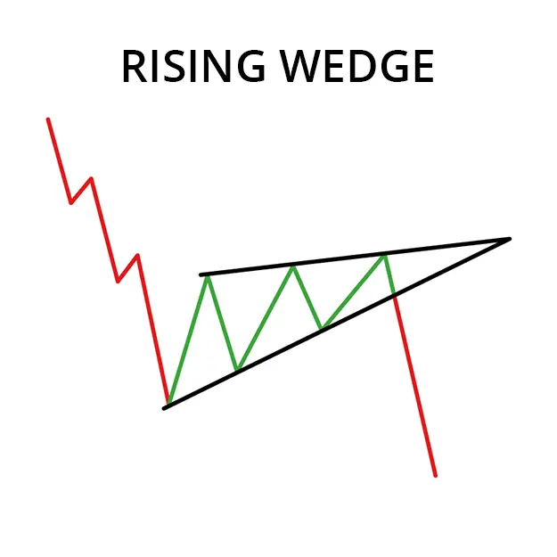
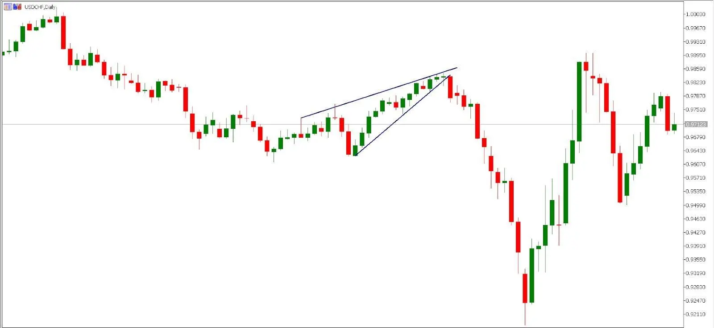

Rising Wedge প্যাটার্ন হল একটি রিভার্সাল চাট প্যাটার্ন যা একটি আপক্ট্রেন্ডের
শেষে গঠিত হয়। প্যাটার্নটি একটি পতাকা বা পতাকাদণ্ডের মতো দেখায়, যার ফলে
এর নাম।
Rising Wedge প্যাটার্নটি একটি সম্ভাব্য পতনের ইঙ্গিত দেয় এবং ট্রেডাররা
প্রায়শই এটিকে ট্রেডিংয়ের সুযোগ হিসাবে ব্যবহার করেন। প্যাটার্নটিতে প্রবেশ
করার জন্য, ট্রেভাররা প্রায়শই পতাকাদণ্ডের উপরে একটি 'ব্রেকওয়ে' সন্ধান
করেন, যা পতাকাদণ্ডের উচ্চতার সমান দুরত্বে।
পতাকাদণ্ডের দৈর্ঘ্য হল পতাকাটির নীচ থেকে পতাকাদণ্ডের শীর্ষে উচ্চতার
পরিমাণ। পতাকাটির প্রস্থ হল পতাকাদণ্ডের শীর্ষ থেকে পতাকাটির নীচে নিন্নমুখী
ভাঙা পর্যন্ত সময়ের ব্যবধান।
Rising Wedge প্যাটার্নটি একটি নির্ভরযোগ্য রিভার্সাল প্যাটার্ন নয়, তবে এটি
একটি সম্ভাব্য পতনের ইঙ্গিত দেয় এবং ট্রেডাররা প্রায়শই এটিকে ট্রৈেডিংয়ের
সুযোগ হিসাবে ব্যবহার করেন।
